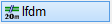
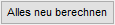

")

Auszüge aus verschiedenen Positionen werden zu einer Position mit lfdm zusammengefasst. Es können in einem Zuge nur gleiche Durchmesser angeklickt werden. Die Formen dürfen nur aus einer Teillänge bestehen!
|
Hinweis: |
|
Das Zusammenfassen zu lfdm kann nur als letzte Aktion durch Korrektur |

 rückgängig gemacht werden!
rückgängig gemacht werden!So wird's gemacht:
[Auszüge anklicken]
§Klicken Sie die Formauszüge, die zu einer Position zusammengefasst werden sollen, in beliebiger Reihenfolge an und bestätigen Sie mit Rechtsklick oder mit der Eingabetaste.
Der Dialog Durchmesser und Längen für LDFM [m] wird geöffnet.

Ermittlung der Gesamtlänge laufender Meter unter Berücksichtigung der Betongüte, des Verbundbereiches und weiterer Parameter. Für jeden Durchmesser steht eine Zeile zur Verfügung. Bei mehr als drei Zeilen können Sie den Ausschnitt mit dem Scrollbalken verschieben.
Betongüte Öffnen Sie die Auswahlbox und klicken Sie die für das Bauteil gültige Betongüte an. Die Übergreifung wird sofort neu ermittelt. Verbundbereich Wählen Sie zwischen gutem und mäßigem Verbundbereich. Die Übergreifung wird sofort neu ermittelt. Durchmesser Der Durchmesser der angeklickten Auszüge wird angezeigt. Max. Stablänge Wählen Sie aus der Auswahlbox eine der vorgeschlagenen Standardlängen aus, oder geben Sie einen abweichenden Wert ein. Daraus ergibt sich die Anzahl der Stöße und Stäbe. Durch Drücken der Eingabetaste wird die Gesamtlänge neu berechnet. Mit der Tabulatortaste ↹ können Sie in die nächste Eingabe springen. Übergreifung Die Übergreifungslänge wird aus der gewählten Betongüte und dem Verbundbereich ermittelt. Wenn Sie einen anderen Wert berücksichtigen wollen, geben Sie diesen manuell ein und bestätigen mit der Eingabetaste. Die Gesamtlänge wird neu berechnet. Gesamtlänge Die mindestens erforderliche Gesamtlänge wird angeschrieben. laufende Meter In der Auswahlbox wird der aufgerundete Wert angezeigt, der sich aus einer ganzzahligen Stabanzahl mit der maximalen Stablänge ergibt. Die Eingabe eines beliebigen Wertes ist möglich. Über die Ausklappliste stehen folgende Werte zur Auswahl:
 Wenn Sie im Feld Übergreifung einen beliebigen Wert eingegeben haben, wird dieser wieder auf das Mindestmaß nach EC2 zurückgestellt, und die Gesamtlänge und die Angabe der laufenden Meter neu berechnet.
Übernimmt den unter laufende Meter angezeigten Wert in die aktuelle Abfrage und setzt diese fort.
Bricht die Bearbeitung ab und schließt den Dialog. |


[Pos.]
-Mit Rechtsklick übernehmen Sie die vorgeschlagene Nummer.
-Es wird die nächste Positionsnummer nach der Letzten vorgeschlagen. Wenn freie Leerpositionen vorhanden sind, werden diese in der Auswahl unterhalb der Eingabe aufgelistet.
-Sie können eine beliebige Position eingeben, vorausgesetzt, diese ist nicht vergeben. Bestätigen Sie die Eingabe mit der Eingabetaste. Beachten Sie, dass die Positionsnummern der zusammenzufassenden Auszüge erst nach dem Zusammenfassen frei werden. Sie können nicht ausgewählt werden.
§Klicken Sie eine der Nummern an.
[Winkel]
-Mit Rechtsklick übernehmen Sie den Winkel 0°.
-In der Schnellauswahl unterhalb der Abfrage können Sie einen Winkel anklicken oder die Ausrichtungsoption P.. oder O... nutzen.
§Geben Sie den gewünschten Winkel ein und bestätigen Sie mit der Eingabetaste.
[Lage Auszug]
§Verschieben Sie den Auszug an eine geeignete Stelle und bestätigen mit der linken Maustaste.
[Lage Text]
§Setzten Sie den Text per Mausklick in der Zeichnung ab oder bestätigen Sie die aktuelle Lage durch Rechtsklick.
Die Darstellung als Staffeln bleibt erhalten. An den zuvor vorhandenen Positionierungen wird lediglich die Positionsnummer geändert.